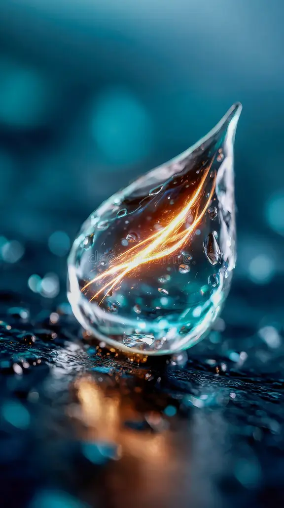

Capitulo 1: El despertar e el Rio
Había una vez una pequeña gota de agua llamada Gotita vivía feliz en un río de agua
H2O cristalino que corría entre montañas verdes y prados llenos de flores. Cada mañana, el sol la saludaba con sus rayos
dorados, y los peces jugaban a su alrededor.
—¡Hola, Gotita! —decía el pez Nemo—, ¿Listo para otro día de aventuras?
—¡Claro! —respondía Gotita, rebotando suavemente sobre las olas—. Me encanta viajar con el río.
Pero un día, algo mágico pasó. El sol brilló con más fuerza que nunca, y Gotita sintió un cosquilleo en todo su cuerpo.
—¡Ay! —dijo—, ¡Me siento más ligera!
De pronto, empezó a elevarse lentamente, como si tuviera alas invisibles. ¡Estaba evaporándose!
Y así, Gotita subió y subió, hasta convertirse en una pequeña nube blanca en el cielo.
Para saber más sobre el ciclo del agua, visita este enlace.


.
Capítulo 2: Una Nube Esponjosa
Allá arriba, Gotita no estaba sola. Conoció a muchísimas otras gotas de agua que también habían subido desde ríos,
lagos y mares. Se tomaron todas de las manos y juntas formaron una nube grande y esponjosa, como de algodón.
¡Era muy divertido flotar juntas por el cielo, empujadas por el viento!. "¡Qué blandita es nuestra casa nueva!",
decían riendo. A esto, una gota más sabia le explicó que se llama condensación. La nube se hizo más y más grande a
medida que llegaban más y más amigas gotas.
Capítulo 3: El Regreso al Hogar
Una por una, comenzaron a caer de nuevo hacia la Tierra en forma de lluvia. ¡Y a esto se le llama precipitación! Después de mojar el bosque, Gotita comenzó a fluir por un pequeño arroyo.
—¡Bienvenida de vuelta, Gotita!— —dijo el río con un murmullo.
Y así, Gotita continuó su viaje en el gran ciclo del agua, lista para volver a subir, caer y ayudar a la Tierra a vivir.